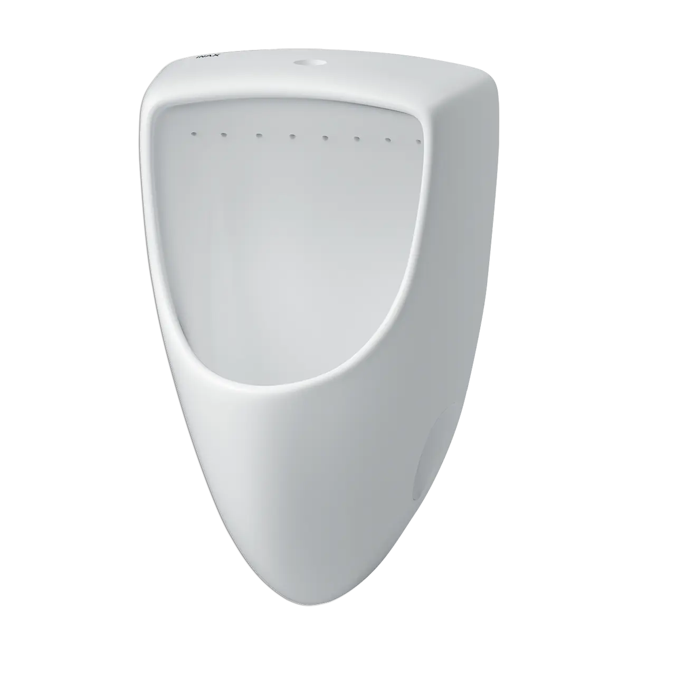
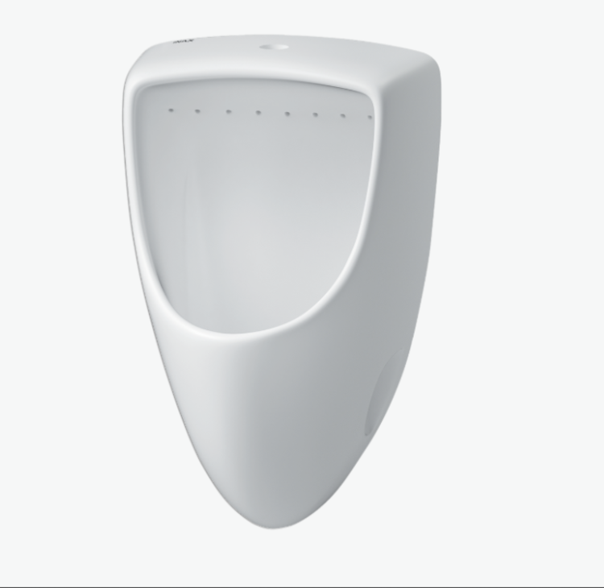
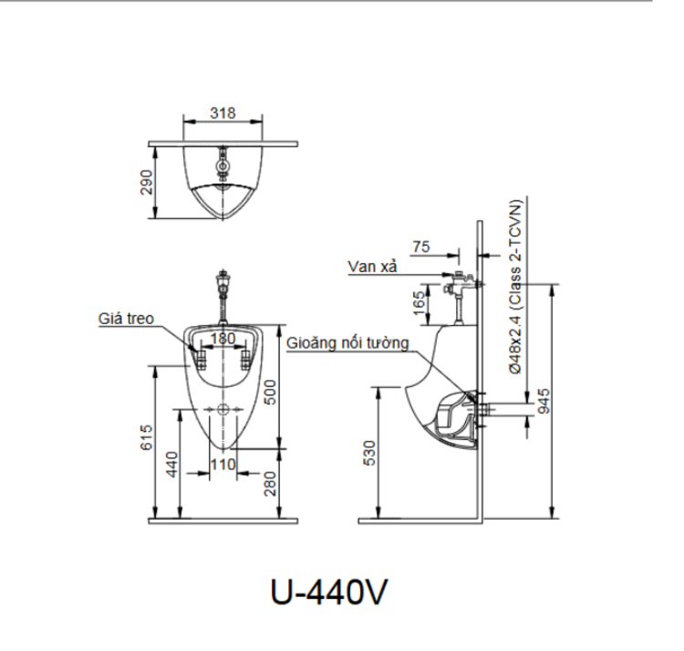

Bồn tiểu nam U-440V là sự kết hợp hoàn hảo giữa thiết kế tối giản, công nghệ xả rửa hiệu quả và chất liệu bền bỉ, mang đến giải pháp vệ sinh tối ưu cho mọi không gian, từ các khu vực công cộng đến phòng tắm gia đình cao cấp. Sản phẩm của thương hiệu INAX nổi tiếng Nhật Bản này giúp tối ưu hóa không gian, đồng thời cam kết về sự sạch sẽ và tiết kiệm.Ưu điểm vượt trội của bồn tiểu nam U-440VThiết kế gọn nhẹ, tối ưu diện tíchBồn tiểu nam U-440V được thiết kế theo kiểu dáng nối tường - một phong cách thiết kế hiện đại và tinh tế. Kiểu dáng này không chỉ giúp sản phẩm trở nên gọn nhẹ, thanh thoát mà còn giải phóng không gian sàn, tạo cảm giác rộng rãi và thoáng đãng hơn cho phòng vệ sinh.Với kích thước 290 (Sâu) x 325 (Rộng) x 500 (Cao) mm, bồn tiểu U-440V có tỷ lệ cân đối, phù hợp với nhiều không gian lớn nhỏ khác nhau mà vẫn đảm bảo sự tiện lợi khi sử dụng. Thiết kế này đặc biệt hiệu quả trong việc tối ưu hóa không gian cho các phòng vệ sinh công cộng, nơi cần lắp đặt nhiều thiết bị vệ sinh trên một diện tích hạn chế.Chất liệu cao cấp và tính năng xả rửa vượt trộiBồn tiểu nam U-440V được chế tạo từ chất liệu sứ cao cấp, một vật liệu đã được INAX kiểm định và chứng minh về độ bền, khả năng chống trầy xước và bám bẩn. Bề mặt sứ nhẵn mịn, dễ dàng vệ sinh, giữ cho bồn tiểu luôn sáng bóng và sạch sẽ.Một điểm nổi bật nhất của U-440V không thể không nhắc đế chính là hệ thống xả rửa bằng vành RIM. Khác với các bồn tiểu truyền thống, vành RIM được thiết kế đặc biệt để tạo ra dòng nước xoáy đều và mạnh mẽ, xả sạch mọi chất bẩn trên toàn bộ bề mặt bên trong lòng bồn. Công nghệ này giúp tiết kiệm nước tối đa mà vẫn đảm bảo hiệu quả vệ sinh tuyệt đối, loại bỏ các cặn bẩn và vi khuẩn tích tụ, giữ cho không gian luôn khô thoáng và không có mùi khó chịu.Ngoài ra, U-440V còn hoạt động tối ưu với áp lực nước cấp từ 0.1 - 0.5 MPa. Dải áp lực nước này phổ biến và phù hợp với hầu hết các hệ thống cấp nước hiện nay, đảm bảo sản phẩm hoạt động ổn định và hiệu quả trong mọi điều kiện.Lắp đặt dễ dàng và nhanh chóngĐể quá trình lắp đặt trở nên thuận tiện và nhanh chóng, INAX đã cung cấp kèm gioăng nối tường UF-13WP(VU), giúp người dùng hoặc thợ lắp đặt không cần tốn thêm thời gian và chi phí để tìm mua, đảm bảo sự tương thích hoàn hảo và hiệu quả xả thải ngay từ ban đầu.Bản vẽ bồn tiểu nam U-440VThông số kỹ thuậtChất liệuSứKiểu dángNối tườngKích thước290 x 325 x 500 mm (Sâu x Rộng x Cao)Đặc điểm- Bồn tiểu xả rửa bằng vành RIM - Áp lực nước cấp 0.1 - 0.5 MPaThương hiệuINAXKhác- Sản phẩm đã bao gồm gioăng nối tường UF-13WP(VU) - Hotline tư vấn và bảo hành: 18006633
Bồn tiểu nam U-440V
Bồn tiểu thương hiệu INAX.
Đã cập nhật danh sách yêu thích.
DANH MỤC: Bồn tiểu
MÃ SẢN PHẨM: U-440V
DEPTH: 75mm
HEIGHT: 318mm
WIDTH: 500mm
Bồn tiểu nam U-440V là sự kết hợp hoàn hảo giữa thiết kế tối giản, công nghệ xả rửa hiệu quả và chất liệu bền bỉ, mang đến giải pháp vệ sinh tối ưu cho mọi không gian, từ các khu vực công cộng đến phòng tắm gia đình cao cấp. Sản phẩm của thương hiệu INAX nổi tiếng Nhật Bản này giúp tối ưu hóa không gian, đồng thời cam kết về sự sạch sẽ và tiết kiệm.Ưu điểm vượt trội của bồn tiểu nam U-440VThiết kế gọn nhẹ, tối ưu diện tíchBồn tiểu nam U-440V được thiết kế theo kiểu dáng nối tường - một phong cách thiết kế hiện đại và tinh tế. Kiểu dáng này không chỉ giúp sản phẩm trở nên gọn nhẹ, thanh thoát mà còn giải phóng không gian sàn, tạo cảm giác rộng rãi và thoáng đãng hơn cho phòng vệ sinh.Với kích thước 290 (Sâu) x 325 (Rộng) x 500 (Cao) mm, bồn tiểu U-440V có tỷ lệ cân đối, phù hợp với nhiều không gian lớn nhỏ khác nhau mà vẫn đảm bảo sự tiện lợi khi sử dụng. Thiết kế này đặc biệt hiệu quả trong việc tối ưu hóa không gian cho các phòng vệ sinh công cộng, nơi cần lắp đặt nhiều thiết bị vệ sinh trên một diện tích hạn chế.Chất liệu cao cấp và tính năng xả rửa vượt trộiBồn tiểu nam U-440V được chế tạo từ chất liệu sứ cao cấp, một vật liệu đã được INAX kiểm định và chứng minh về độ bền, khả năng chống trầy xước và bám bẩn. Bề mặt sứ nhẵn mịn, dễ dàng vệ sinh, giữ cho bồn tiểu luôn sáng bóng và sạch sẽ.Một điểm nổi bật nhất của U-440V không thể không nhắc đế chính là hệ thống xả rửa bằng vành RIM. Khác với các bồn tiểu truyền thống, vành RIM được thiết kế đặc biệt để tạo ra dòng nước xoáy đều và mạnh mẽ, xả sạch mọi chất bẩn trên toàn bộ bề mặt bên trong lòng bồn. Công nghệ này giúp tiết kiệm nước tối đa mà vẫn đảm bảo hiệu quả vệ sinh tuyệt đối, loại bỏ các cặn bẩn và vi khuẩn tích tụ, giữ cho không gian luôn khô thoáng và không có mùi khó chịu.Ngoài ra, U-440V còn hoạt động tối ưu với áp lực nước cấp từ 0.1 - 0.5 MPa. Dải áp lực nước này phổ biến và phù hợp với hầu hết các hệ thống cấp nước hiện nay, đảm bảo sản phẩm hoạt động ổn định và hiệu quả trong mọi điều kiện.Lắp đặt dễ dàng và nhanh chóngĐể quá trình lắp đặt trở nên thuận tiện và nhanh chóng, INAX đã cung cấp kèm gioăng nối tường UF-13WP(VU), giúp người dùng hoặc thợ lắp đặt không cần tốn thêm thời gian và chi phí để tìm mua, đảm bảo sự tương thích hoàn hảo và hiệu quả xả thải ngay từ ban đầu.Bản vẽ bồn tiểu nam U-440VThông số kỹ thuậtChất liệuSứKiểu dángNối tườngKích thước290 x 325 x 500 mm (Sâu x Rộng x Cao)Đặc điểm- Bồn tiểu xả rửa bằng vành RIM - Áp lực nước cấp 0.1 - 0.5 MPaThương hiệuINAXKhác- Sản phẩm đã bao gồm gioăng nối tường UF-13WP(VU) - Hotline tư vấn và bảo hành: 18006633
DANH MỤC: Bồn tiểu
MÃ SẢN PHẨM: U-440V
DEPTH: 75mm
HEIGHT: 318mm
WIDTH: 500mm